01 / FLOW DESIGN & IMPLEMENTATION
ChainCheck｜連鎖の成果と次の遊びをつなぐ
外部試遊で、連鎖の爽快感がミニゲームへの切り替えで途切れると指摘されました。そこで、連鎖終了後に連鎖数を見せ、次のミニゲームへの移行を知らせる画面を提案・実装しました。
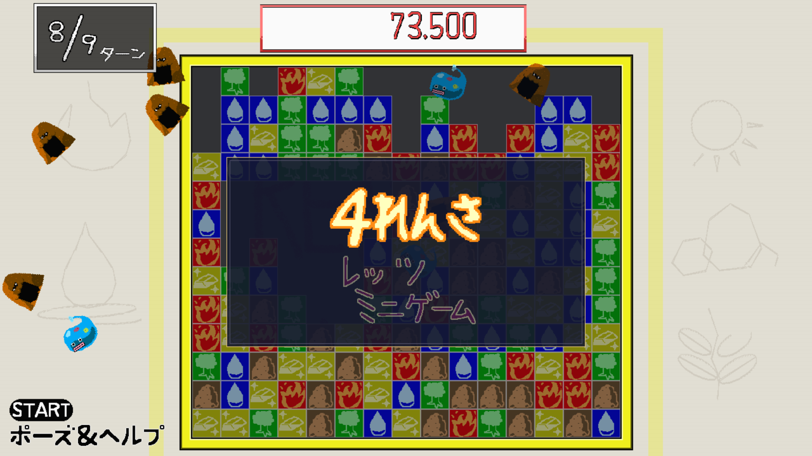
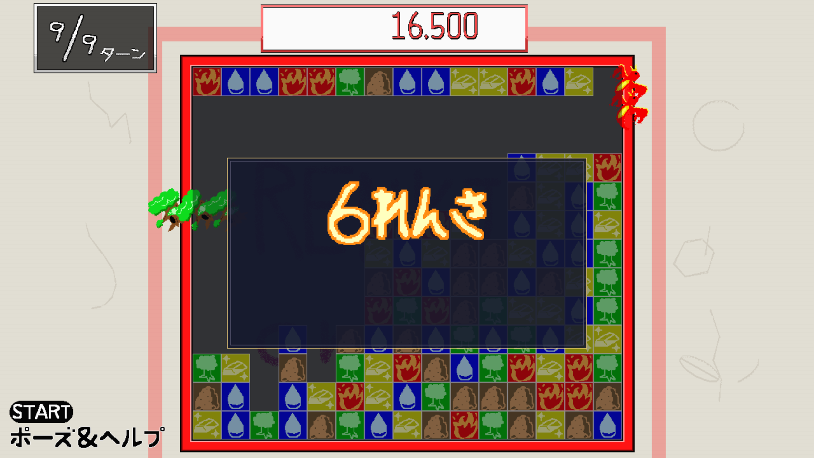
導入後の評価：チーム内では好評でした。一方、外部試遊者からChainCheck単体の反応は得ておらず、中断感がどの程度改善したかは未検証です。
TEAM PROJECT / GAME PLANNING & C++
TOKYO GAME SHOW 2026 出展 選出：全16チーム中3位
連鎖パズル × 5種のミニゲーム
9ターンで高得点を狙う、連鎖パズルと5種類のミニゲームを組み合わせたゲームです。ブロックの選択から落下・連鎖を考え、4連鎖以上で発生するミニゲームの追加消去を狙います。
主な貢献：ASOBEから連鎖中心の仕様への再設計を提案。さらに外部試遊で指摘された移行時の中断感に対して、ChainCheckを提案・実装しました。現行Swapの企画・実装、Timingの初期実装、ハイライト表示なども担当しました。

PLANNED & IMPLEMENTED BY ME
「遊びの流れを伝える仕組み」と「大連鎖の報酬として遊ぶミニゲーム」。担当したChainCheckと現行Swapを、実際のプレイ画面で紹介します。画像を選択すると原寸で開きます。
01 / FLOW DESIGN & IMPLEMENTATION
外部試遊で、連鎖の爽快感がミニゲームへの切り替えで途切れると指摘されました。そこで、連鎖終了後に連鎖数を見せ、次のミニゲームへの移行を知らせる画面を提案・実装しました。


02 / MINIGAME PLANNING & IMPLEMENTATION
4連鎖以上の達成時、最初に選んだ色に対応して発生する5種類のミニゲームの1つ。錬金液と魔力泡を注ぎ、指定された比率へ近づける内容を本人が提案・実装しました。
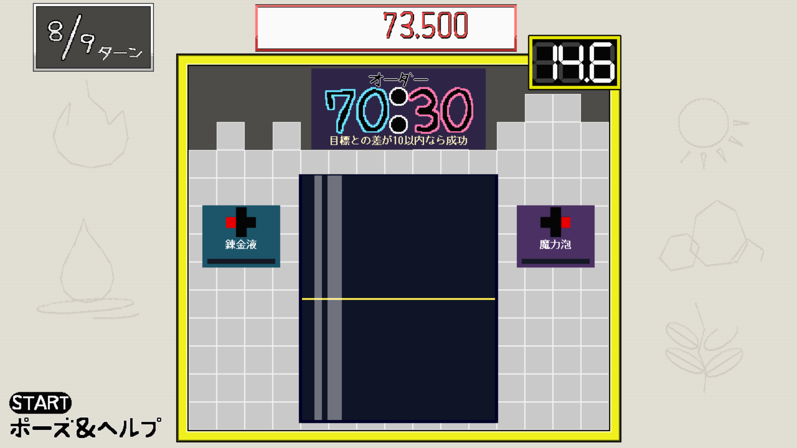
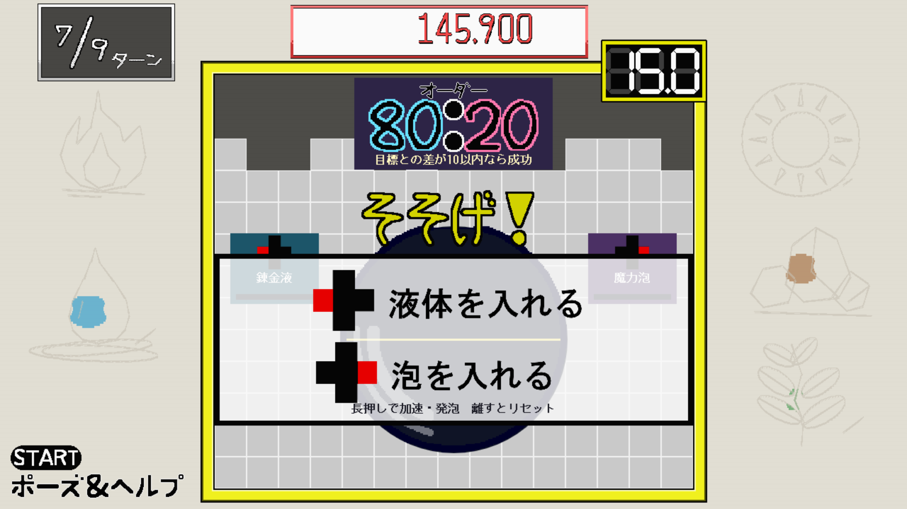
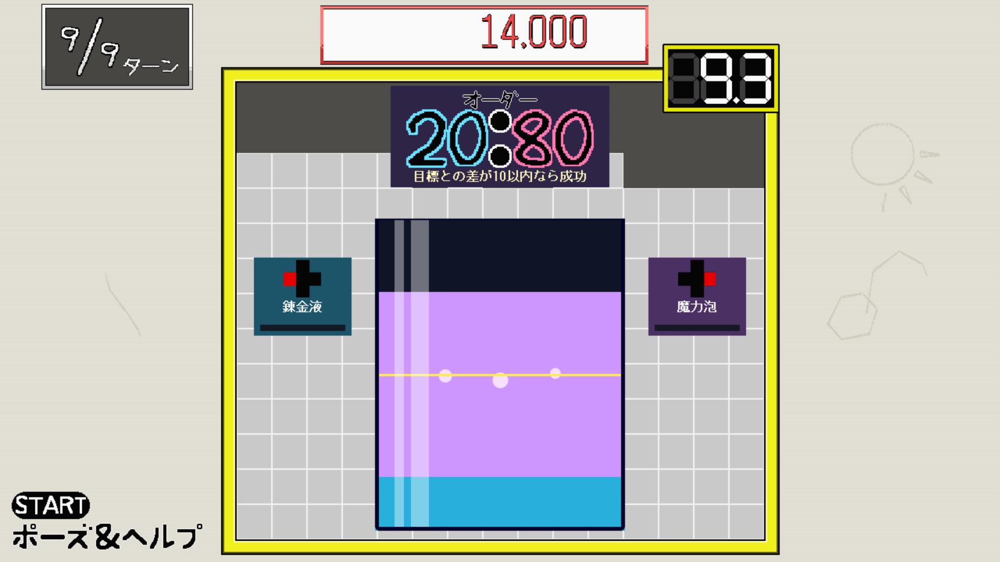
01
15列×13行・5色の盤面から同色グループを選んで直接消去します。落下後、着地したブロックを起点に同色3個以上のつながりがあれば自動消去を繰り返し、連鎖が成立します。連鎖が終わったあと、補充と結果表示を経て4連鎖以上ならミニゲームへ。発生する種類は最初に選んだ色で決まり、成功するとゲームごとに異なる範囲を追加消去します。9ターンのスコア・称号・ランキングを競います。
PLAY MOVIE
TGS2026 RENKINcrush
映像が表示されない環境では上のリンクから開いてください。PDF版では埋め込み再生されないため、URLを掲載しています。
GAMEPLAY MOVIE
ゲームプレイの記録
映像が表示できない場合はYouTubeのリンクを開いてください。
TRIAL BUILD
採用担当者向けに、Windows向けの試遊版ビルドも掲載しています。動画に加えて、実際の操作感も確認できます。
WINDOWS BUILD
配布ファイル名：GP34TeamF_Build_0914.zip
Google Drive上の約220MBの試遊ビルドです。
https://drive.google.com/file/d/148q3V9yiPLH_lLyB8K67_KtLD2d2w9QZ/view?usp=drivesdk
NOTES
※ 応募時点で共有設定済みのGoogle Driveリンクを掲載しています。
ROLE & RESPONSIBILITY
3人チームで制作。本人と共同制作者の担当を分けて示しています（以下は本人が確認した主な分担）。
本人
本人担当の範囲：ChainCheck・現行の調合型Swapは企画から実装まで、Timingは初期実装を担当しました。
メンバーA
メンバーB
| 領域 | 本人の担当 | 決定・実装の区分 |
|---|---|---|
| 最終パズル仕様 | 直接選択での消去、落下後3個以上の連鎖、4連鎖でのミニゲーム、9ターン制を提案 | 単独提案 |
| 付随仕様 | 召喚獣と称号を提案 | 単独提案 |
| ミニゲーム企画 | 現行Swap（錬金液・泡の調合）を提案。Timing・ButtonBashの初期内容と成功条件を提案。Action・Shootingはチームで検討 | 単独＋共同 |
| スコア・ランキング | スコア計算式とランキング仕様の検討に参加 | 共同決定 |
| 実装 | ChainCheck（連鎖終了の結果表示と次段階への移行）、現行Swap（調合ゲーム）、Timingの初期版、選択範囲のハイライト表示を実装。Timingの後続改修は本人実績に含めていません | 本人実装 |
| 数値調整 | Swapの操作感・成功条件、Timingの初期許容範囲、Shootingの弾数・クールタイム等を調整（現行値は別記） | 本人調整 |
| 演出・品質 | Swap中、消去時、召喚獣のはじけ方、各ミニゲーム成功時、ターン遷移時の演出を調整・確認 | 本人調整 |
各メンバーが案を出す、または軽く試作した後、本人が内容を確認・整理し、先生方のレビューを受けてチームで最終決定しました。
AI利用：Swapの一部演出と、画像の上下左右反転・回転処理で実装補助として利用しました。仕様判断、数値調整、動作確認は本人が行っています。
02
制作背景
最初は「積みゲーを解消する」という発想でした。試作版ASOBE（Ver0517）では、積まれた盤面から同色の塊を選び、対応するミニゲームを成功させてブロックを消す全消し型パズルを試作しました。
問題の発見と再設計
試遊でルールの分かりにくさを指摘され、ブロック消去のたびに別の操作・判断を求める構造を課題と捉えました。盤面の連鎖とスコアを主役にし、ミニゲームを4連鎖以上の報酬へ変更する仕様を提案しました。この変更は外部試遊会での後続改善とは別の段階です。
学んだこと
大きな仕様変更には反対意見もあったため、新旧仕様の違い、実装可能性、教員・クラスメートの試遊評価を判断材料として共有しました。結果だけでなく、変更の理由と検証の過程を説明する重要性を学びました。
PLAY EXPERIENCE REDESIGN
初期の「積みゲーを解消する」案から、旧版ASOBE（Gitブランチ Ver0517）を経て、連鎖とスコア中心のゲームへ再設計しました。以下は旧版の実プレイ画面と、再設計後の記録画面です。
BEFORE / ASOBE・Ver0517
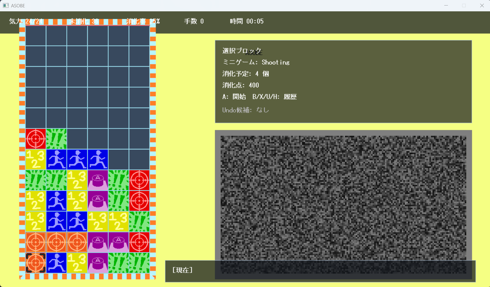
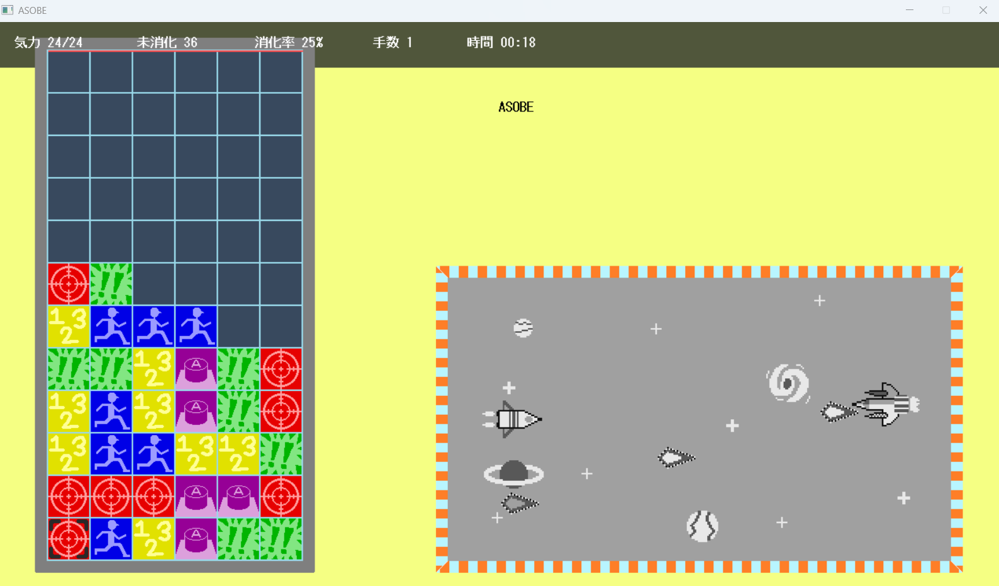
課題と捉えた点：パズルで消す場所を考えても、消去には毎回別の操作・判断が必要であり、思考の流れが途切れやすいと判断しました。
AFTER / RENKINcrush
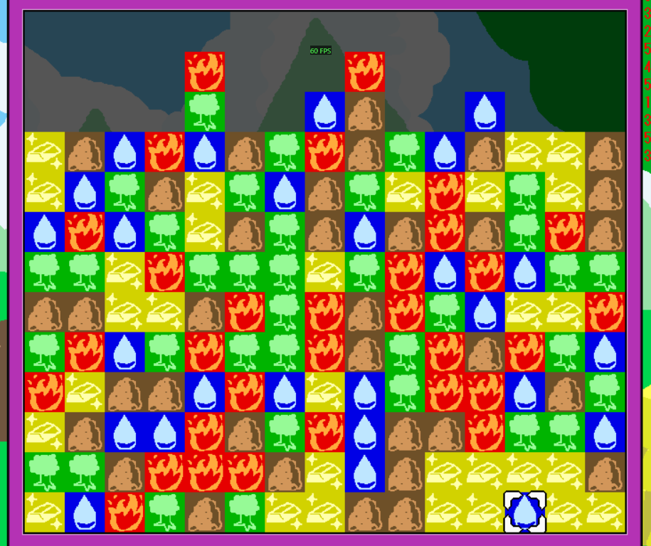
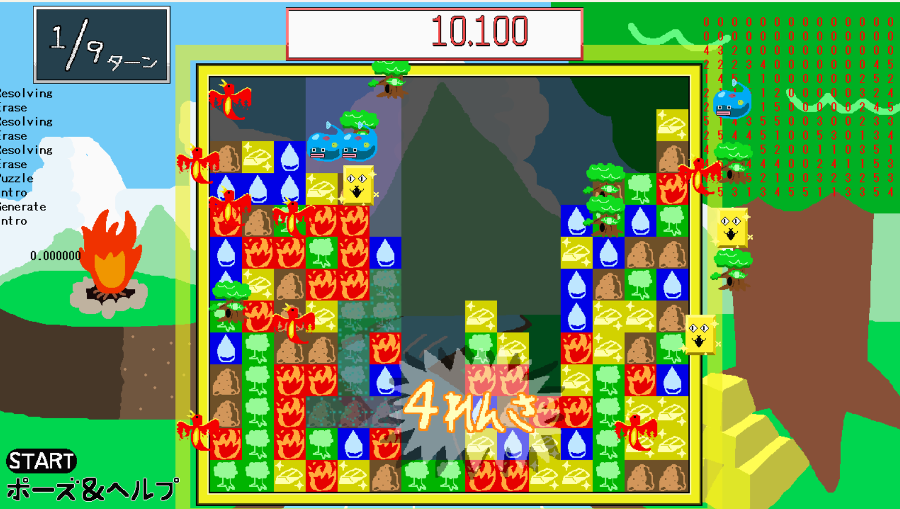
狙った体験：盤面の選択と連鎖を遊びの中心に置き、ミニゲームを大連鎖の報酬としました。
※旧版は開発途中の Ver0517 で、最初期の原案とは異なります。比較画像の「再設計後」は保存時点の画面であり、10月29日時点のUIを再現するものではありません。統一した指標による新旧比較データは未整理です。
原案を維持したい意見に対し、旧仕様の問題点だけでなく、変更後のゲームフロー、実現したい体験、 残り期間で実装できる案を示しました。各メンバーの案や軽い試作を確認した後、先生方にもレビューを依頼し、 チームで最終仕様を決定しました。自分の案を押し通すのではなく、判断材料を増やして共通認識を作ることを意識しました。
PROBLEM SOLVING
企画、操作設計、プログラムの異なる観点から、問題の原因を整理して対応しました。
企画・ゲームフロー
操作・ルール理解
プログラム・スコア処理
FIELD REVIEW
初期の仕様再設計後、外部試遊会で「連鎖の楽しさがミニゲームへの移行で途切れる」と指摘されました。これを受け、本人がChainCheckを提案・実装。 導入後のチーム内の反応は好評でしたが、その機能について外部からの評価は得ていません。
学生の試遊コメント
ブロックの消去演出や連鎖の楽しさに好意的な反応がありました。一方、ミニゲームの難易度や、既に3個以上つながったブロックの扱いも指摘されました。
イリンクスからの試遊コメント
ミニゲームの発想と出来を評価する一方、連鎖の爽快感が続く途中で遊びが切り替わる点を指摘されました。
サイバーコネクトツーからの試遊コメント
ルールの分かりやすさと4連鎖のボーナスを評価する一方、起点選択以外に介入できる操作が少なく、連鎖を運任せに感じやすいという指摘を受けました。
| 論点 | 反映・確認できたこと | 現時点の評価 |
|---|---|---|
| ミニゲームが連鎖の爽快感を中断する | 本人がChainCheckを提案・実装。 連鎖が完全に終わったあと連鎖数と次の展開を表示し、補充・案内を経てミニゲームへ移行するよう整理。 | 導入後はチーム内で好評。一方、外部試遊者からChainCheck単体についての反応は得られておらず、中断感の改善効果は未検証。 |
| 連鎖を自分で組み立てる余地が少ない | 選択グループのハイライトはあるが、入力操作は基本的に消去起点の選択。連鎖は落下と補充結果に左右される。 | 継続課題。解決したとは記載しない。 |
| 既に3個以上つながったブロックが消えない | 現行コードは着地したブロックを起点に自動連鎖を判定するため、既存の塊すべてが自動消去される仕様ではない。 | 仕様の説明・理解促進を含め検討が必要。 |
連鎖終了後に結果を表示して、次にミニゲームへ進むことを知らせるためのChainCheckを本人が提案・実装しました。実画面と仕様の狙いはページ前半の「本人が提案・実装した2つの機能」にまとめています。
反応：導入後、チーム内では好評でした。ただし、外部試遊者からの機能別の反応・改善前後の比較データはありません。
資料：『【2026】試遊会_コメント一覧』と2026年10月29日時点のソース読解資料。Cygamesから別途受けた作品講評とは異なる機会です。
EXHIBITION & USER FEEDBACK
2026年4月10日〜6月26日の制作後、全16チーム中3位となり、上位4チームに与えられるTGS2026の出展枠を獲得しました。会場では他チームの学生と交代でブースに立ち、呼び込みと試遊者へのヒアリングに参加しました。
上位4チームが出展
2026年・3人チーム
会場で回収した回答
出展時に回収した11件の回答を集計したところ、特にゲームテンポ・爽快感が高く評価されました。
面白さ
4.6 / 5有効回答10件・5点が7件
テンポ・爽快感
4.6 / 5有効回答11件・5点が7件
わかりやすさ
4.4 / 5有効回答10件・5点が6件
集計方法：11件を母数とし、数値が1つに定まる回答のみ平均しています。「4・5」と記された回答1件は、面白さ・わかりやすさの平均から除外。小数第2位を四捨五入しました。回答者の年齢・性別・職業などの個人属性は掲載していません。
WHAT WORKED
自由記述には、連鎖時の演出の爽快感、テンポよく遊べる点、ブロックの色でミニゲームが変化する点を評価する声がありました。連鎖を中心に据えた遊び方が、少なくとも一部の試遊者に伝わったと考えています。
REMAINING ISSUE
一方で、調合型Swapの遊び方が分かりにくい、パズルの後のミニゲームとの関連が薄い、複数のゲーム要素を単に足したように感じたという指摘がありました。遊びを切り替えるときの納得感と情報提示には改善余地があります。
補足：回答数は11件で、プレイ回数は1回が9件、2回が2件です。来場者全体を代表する標本ではなく、改修前後を比較した調査でもありません。評価値はTGSでの試遊者の声として扱い、改善効果や統計的な優位性を断定しません。先の「外部試遊会」のコメントとは別の調査です。
03
作品の核となる体験と、そこへつなげるための設計・実装を4項目に整理しました。
01 / GAME DESIGN
再設計後は、パズルの流れを保ちながら、大連鎖の成果をミニゲームにつなぐようにしました。
Ver0517では毎回ミニゲームをクリアしなければブロックを消せませんでした。新仕様では直接消去と落下連鎖を中心にし、4連鎖以上の達成時にボーナスとして発生させます。試遊会後は本人がChainCheckを提案・実装し、連鎖終了後の結果案内・補充を挟むよう変更しました。
02 / BALANCE DESIGN
狙った連鎖と偶然の連鎖がどちらも起きるよう、プレイ確認を踏まえて発生条件を決めました。
4連鎖以上をミニゲーム条件として採用しました。ただし、連鎖発生率の再現可能な計測は未整理です。外部試遊では「運任せに感じられる」という指摘もあり、プレイヤー自身の判断で連鎖を作れる余地は今後の検討課題です。
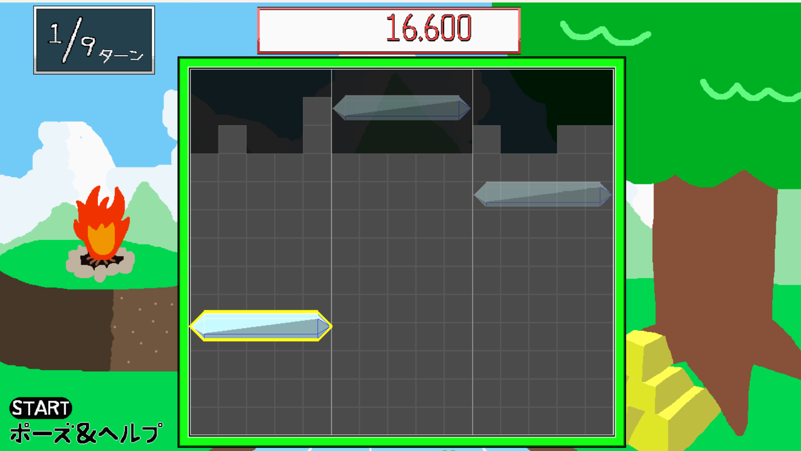
03 / IMPLEMENTATION
Swapは企画から実装まで担当しました。Timingについては初期版の実装を担当しました。
Swapでは目標比率に向けて錬金液と泡を調合する操作・演出を実装しました（実画面は上部の機能紹介に掲載）。Timingでは3本のバーを停止する初期版の処理を担当し、後続の改修は本人実績に含めていません。
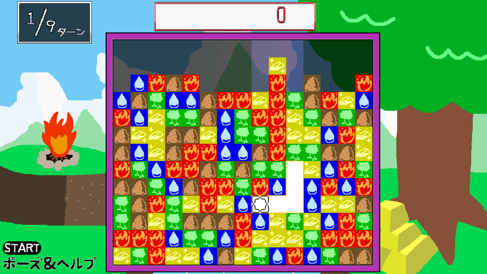
04 / USABILITY
決定後の結果を予測しやすくし、連鎖を考えるための情報を画面上に追加しました。
上下左右につながる同色グループを選択前に強調し、消去範囲を分かりやすくしました。落下後の展開を読みやすくするための情報提示ですが、実際に連鎖をどこまで操作できるかは別の問題で、試遊で指摘された主体性の課題は引き続き残っています。
GAME SPECIFICATION
現在の実装を、採用担当が短時間で把握できる情報に絞っています。
実際のプレイで連鎖が偶然にも意図的にも発生することを観察し、報酬条件として採用しました。ただし、外部試遊で操作の主体性が弱いとの指摘を受けており、再現性のある発生率・改善効果のデータは未整理です。
5種類のミニゲームを複数体験できる可能性を残しながら、1プレイが長くなりすぎて飽きない範囲として設定しました。
種類が少なすぎる単調さと、色が多すぎる視認性低下の間を取り、5色のブロックと5種類のミニゲームを対応させました。
RED
30秒以内に敵を倒すシューティング。成功時には敵位置を中心とした爆発範囲のブロックを追加消去します。
BLUE
床を上げるアクションを3回成功させるゲーム。成功時には盤面の下側6行を追加消去します。
YELLOW
15秒以内に錬金液と泡を注ぎ、指定された液体比率（目標±10ポイント）へ調合。成功時は盤面中央から半径270px以内を追加消去。
BROWN
5秒以内に23回のボタン入力を成功させ、中央を中心に半径250px程度の範囲を追加消去します。
GREEN
3本のバーを順番に止め、最初の停止位置を基準に残り2本を±45px以内へ。成功時は対応する行と上下2行を追加消去。
企画・実装上の役割：現行Swap（調合ゲーム）の提案と実装、Timingの初期実装、ハイライト表示の実装は本人が担当しました。ButtonBashの初期内容も提案し、Action・Shootingはチームで検討しました。Timingは初期実装を担当しました。AIを利用した実装補助の内容は担当範囲の欄に記載しています。
外部試遊会（学生・イリンクス・サイバーコネクトツー）のコメントは本ページの「外部試遊」欄に整理しています。別途、Cygamesの関係者にも作品を見せて講評を受けていますが、高い評価を受けたという主張はしていません。
連鎖の爽快感は評価される一方、ミニゲームへのつながりやSwapの説明に課題があると分かりました。今後は、実装案を小さく試し、共通の試遊項目で「操作の理解」「つながりの納得感」「連鎖の主体性」を確認したいと考えています。